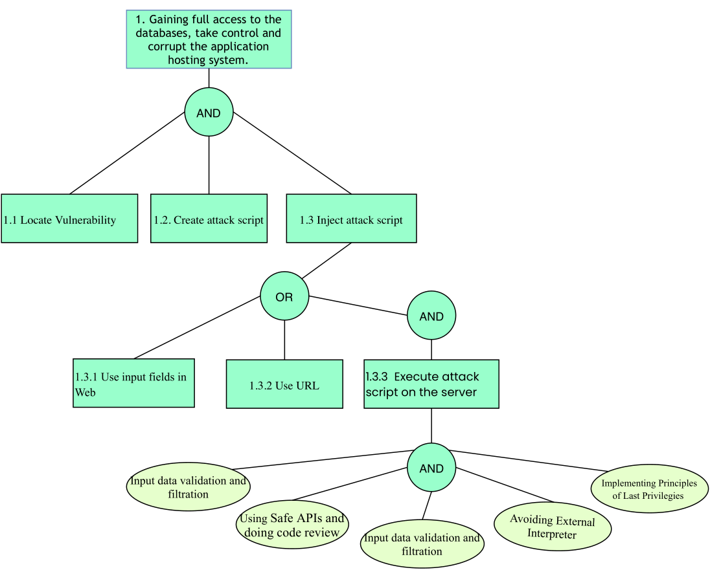
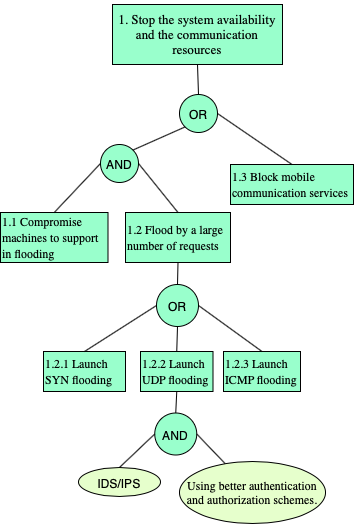

| Architeture | Hybrid Application |
| Application domain type | m-Health |
| Authentication | Username and Password |
| Has DB | Yes |
| Type of data storage | SQL |
| Which DB | MySQL |
| Type of data stored | Personal Information ; Confidential Data ; Critical Data |
| User Registration | Yes |
| Type of Registration | The users will register themselves |
| Programming Languages | HTML5 ; PHP |
| Input Forms | Yes |
| Upload Files | Yes |
| The system has logs | Yes |
| The system has regular updates | Yes |
| The system has third-party | Yes |
| System Cloud Environments | Public Cloud |
| Hardware Specification | Yes |
| HW Authentication | Basic Authentication (user/pass) |
| HW Wireless Tech | 4G / LTE |
| Data Center Phisical Access | Yes |
Input validation is performed to ensure only properly formed data is entering the workflow in an information system, preventing malformed data from persisting in the database and triggering malfunction of various downstream components.
Implementing input validation
If it's well structured data, like dates, social security numbers, zip codes, e-mail addresses, etc. then the developer should be able to define a very strong validation pattern, usually based on regular expressions, for validating such input. If the input field comes from a fixed set of options, like a drop down list or radio buttons, then the input needs to match exactly one of the values offered to the user in the first place. Free-form text, especially with Unicode characters, is perceived as difficult to validate due to a relatively large space of characters that need to be whitelisted. The primary means of input validation for free-form text input should be:
Client Side vs Server Side Validation
Be aware that any JavaScript input validation performed on the client can be bypassed by an attacker that disables
JavaScript or uses a Web Proxy. Ensure that any input validation performed on the client is also performed on the server.
Email Validation Basics
Many web applications do not treat email addresses correctly due to common misconceptions about what constitutes
a valid address. Specifically, it is completely valid to have an mailbox address which:
Following RFC 5321, best practice for validating an email address would be to:
https://github.com/OWASP/CheatSheetSeries/blob/master/cheatsheets/Input_Validation_Cheat_Sheet.md
A web session is a sequence of network HTTP request and response transactions associated to the same user. Modern and complex web applications require the retaining of information or status about each user for the duration of multiple requests. Therefore, sessions provide the ability to establish variables - such as access rights and localization settings - which will apply to each and every interaction a user has with the web application for the duration of the session.
Additionally, web applications will make use of sessions once the user has authenticated. This ensures the ability to identify the user on any subsequent requests as well as being able to apply security access controls, authorized access to the user private data, and to increase the usability of the application. Therefore, current web applications can provide session capabilities both pre and post authentication.
In order to keep the authenticated state and track the users progress within the web application, applications provide users with a session identifier (session ID or token) that is assigned at session creation time, and is shared and exchanged by the user and the web application for the duration of the session. The session ID is a name=value pair.
With the goal of implementing secure session IDs, the generation of identifiers (IDs or tokens) must meet the following properties:
Session ID Name Fingerprinting
The name used by the session ID should not be extremely descriptive nor offer unnecessary details about the purpose and meaning of the ID. It is recommended to change the default session ID name of the web development framework to a generic name, such as id.
Session ID Length
The session ID must be long enough to prevent brute force attacks, where an attacker can go through the whole range of ID values and verify the existence of valid sessions. The session ID length must be at least 128 bits (16 bytes).
Session ID Entropy
The session ID must be unpredictable (random enough) to prevent guessing attacks, where an attacker is able to guess or predict the ID of a valid session through statistical analysis techniques. For this purpose, a good PRNG (Pseudo Random Number Generator) must be used. The session ID value must provide at least 64 bits of entropy (if a good PRNG is used, this value is estimated to be half the length of the session ID).
Session ID Content (or Value)
The session ID content (or value) must be meaningless to prevent information disclosure attacks, where an attacker is able to decode the contents of the ID and extract details of the user, the session, or the inner workings of the web application.
The session ID must simply be an identifier on the client side, and its value must never include sensitive information. The meaning and business or application logic associated to the session ID must be stored on the server side, and specifically, in session objects or in a session management database or repository.
The stored information can include the client IP address, User-Agent, e-mail, username, user ID, role, privilege level, access rights, language preferences, account ID, current state, last login, session timeouts, and other internal session details. If the session objects and properties contain sensitive information, such as credit card numbers, it is required to duly encrypt and protect the session management repository. It is recommended to create cryptographically strong session IDs through the usage of cryptographic hash functions such as SHA256.
Inactivity Time Out*
Authenticated sessions should timeout after determined period of inactivity - 15 minutes is recommended.
Login & Logout
New session IDs should be created on login (to prevent session fixation via XSS on sibling domains or subdomains).
Upon logout the session ID should be invalidated on the server side and deleted on the client via expiration/overwriting the value.
The session ID exchange mechanism based on cookies provides multiple security features in the form of cookie attributes that can be used to protect the exchange of the session ID:
Secure Attribute The Secure cookie attribute instructs web browsers to only send the cookie through an encrypted HTTPS (SSL/TLS) connection. This session protection mechanism is mandatory to prevent the disclosure of the session ID through MitM (Man-in-the-Middle) attacks. It ensures that an attacker cannot simply capture the session ID from web browser traffic.
HttpOnly Attribute The HttpOnly cookie attribute instructs web browsers not to allow scripts an ability to access the cookies via the DOM document.cookie object. This session ID protection is mandatory to prevent session ID stealing through XSS attacks.
SameSite Attribute SameSite allows a server define a cookie attribute making it impossible to the browser send this cookie along with cross-site requests. The main goal is mitigate the risk of cross-origin information leakage, and provides some protection against cross-site request forgery attacks.
Domain and Path Attributes The Domain cookie attribute instructs web browsers to only send the cookie to the specified domain and all subdomains. If the attribute is not set, by default the cookie will only be sent to the origin server. The Path cookie attribute instructs web browsers to only send the cookie to the specified directory or subdirectories (or paths or resources) within the web application. If the attribute is not set, by default the cookie will only be sent for the directory (or path) of the resource requested and setting the cookie.
Expire and Max-Age Attributes Typically, session management capabilities to track users after authentication make use of non-persistent cookies. This forces the session to disappear from the client if the current web browser instance is closed. Therefore, it is highly recommended to use non-persistent cookies for session management purposes, so that the session ID does not remain on the web client cache for long periods of time, from where an attacker can obtain it.
https://github.com/OWASP/CheatSheetSeries/blob/master/cheatsheets/Session_Management_Cheat_Sheet.md
Given the way browsers parse HTML, each of the different types of slots has slightly different security rules. When you put untrusted data into these slots, you need to take certain steps to make sure that the data does not break out of that slot into a context that allows code execution.
HTML entity encoding is okay for untrusted data that you put in the body of the HTML document, such as inside a "div" tag. It even sort of works for untrusted data that goes into attributes, particularly if you're religious about using quotes around your attributes. But HTML entity encoding doesn't work if you're putting untrusted data inside a "script" tag anywhere, or an event handler attribute like onmouseover, or inside CSS, or in a URL.
XSS Prevention Rules
An architectural decision must be made to determine the appropriate method to protect data at rest. There are such wide varieties of products, methods and mechanisms for cryptographic storage.The general practices and required minimum key length depending on the scenario listed below:
Good practices:
Recommended Algorithms: * Confidentiality algorithms: AES-GCM-256 or ChaCha20-Poly1305; * Integrity algorithms: SHA-256, SHA-384, SHA-512, Blake2; * Digital signature algorithms: RSA (3072 bits and higher), ECDSA with NIST P-384; * Key establishment algorithms: RSA (3072 bits and higher), DH (3072 bits or higher), ECDH with NIST P-384; * Application must be capable of using end-to-end encryption via SSL / TLS in relation to sensitive data in transit and at rest.
Additionally, you should always rely on secure hardware (if available) for storing encryption keys, performing cryptographic operations, etc.
Secure Cryptographic Storage Design:
Use strong approved Authenticated Encryption
CCM or GCM are approved Authenticated Encryption modes based on AES algorithm.
Use strong approved cryptographic algorithms
Use strong random numbers
The following libraries are considered weak random numbers generators and should not be used:
C library: random(), rand(), use getrandom(2) instead
Java library: java.util.Random() instead use java.security.SecureRandom instead
For secure random number generation, refer to NIST SP 800-90A. CTR-DRBG, HASH-DRBG, HMAC-DRBG are recommended
Introduction
This cheat sheet provides a simple model to follow when implementing transport layer protection for an application. Although the concept of SSL is known to many, the actual details and security specific decisions of implementation are often poorly understood and frequently result in insecure deployments. This article establishes clear rules which provide guidance on securely designing and configuring transport layer security for an application. This article is focused on the use of SSL/TLS between a web application and a web browser, but we also encourage the use of SSL/TLS or other network encryption technologies, such as VPN, on back end and other non-browser based connections.
Architectural Decision
An architectural decision must be made to determine the appropriate method to protect data when it is being transmitted. The most common options available to corporations are Virtual Private Networks (VPN) or a SSL/TLS model commonly used by web applications. The selected model is determined by the business needs of the particular organization. For example, a VPN connection may be the best design for a partnership between two companies that includes mutual access to a shared server over a variety of protocols. Conversely, an Internet facing enterprise web application would likely be best served by a SSL/TLS model.
TLS is mainly a defence against man-in-the-middle attacks. An TLS Threat Model is one that starts with the question "What is the business impact of an attacker's ability to observe, intercept and manipulate the traffic between the client and the server".
This cheat sheet will focus on security considerations when the SSL/TLS model is selected. This is a frequently used model for publicly accessible web applications.
Providing Transport Layer Protection with SSL/TLS
Benefits *
The primary benefit of transport layer security is the protection of web application data from unauthorized disclosure and modification when it is transmitted between clients (web browsers) and the web application server, and between the web application server and back end and other non-browser based enterprise components.
The server validation component of TLS provides authentication of the server to the client. If configured to require client side certificates, TLS can also play a role in client authentication to the server. However, in practice client side certificates are not often used in lieu of username and password based authentication models for clients.
TLS also provides two additional benefits that are commonly overlooked; integrity guarantees and replay prevention. A TLS stream of communication contains built-in controls to prevent tampering with any portion of the encrypted data. In addition, controls are also built-in to prevent a captured stream of TLS data from being replayed at a later time.
It should be noted that TLS provides the above guarantees to data during transmission. TLS does not offer any of these security benefits to data that is at rest. Therefore appropriate security controls must be added to protect data while at rest within the application or within data stores.
Good Practices *
Use TLS, as SSL is no longer considered usable for security;
The HTTP Strict Transport Security Header must be used and pre loaded into browsers. This will instruct compatible browsers to only use HTTPS, even if requested to use HTTP. Cookies must be marked as Secure.
Basic Requirements *
Access to a Public Key Infrastructure (PKI) in order to obtain certificates;
[https://github.com/OWASP/CheatSheetSeries/blob/master/cheatsheets/Transport_Layer_Protection_Cheat_Sheet.md]
Authorization is the process where requests to access a particular resource should be granted or denied. It should be noted that authorization is not equivalent to authentication - as these terms and their definitions are frequently confused. Authentication is providing and validating identity. Authorization includes the execution rules that determines what functionality and data the user (or Principal) may access, ensuring the proper allocation of access rights after authentication is successful.
Web applications need access controls to allow users (with varying privileges) to use the application. They also need administrators to manage the applications access control rules and the granting of permissions or entitlements to users and other entities.
Role Based Access Control (RBAC)
Access decisions are based on an individual's roles and responsibilities within the organization or user base. An RBAC access control framework should provide web application security administrators with the ability to determine who can perform what actions, when, from where, in what order, and in some cases under what relational circumstances.
Advantages:
Problems:
Areas of caution:
Discretionary Access Control (DAC) is a means of restricting access to information based on the identity of users and/or membership in certain groups. Access decisions are typically based on the authorizations granted to a user based on the credentials he presented at the time of authentication. The owner of information or any resource is able to change its permissions at his discretion.
Advantages:
Problems:
Areas of caution:
Mandatory Access Control (MAC) Ensures that the enforcement of organizational security policy does not rely on voluntary web application user compliance. MAC secures information by assigning sensitivity labels on information and comparing this to the level of sensitivity a user is operating at.MAC is usually appropriate for extremely secure systems including multilevel secure military applications or mission critical data applications.
Advantages :
Problems :
Areas of caution :
Permission Based Access Control Is the abstraction of application actions into a set of permissions. A permission may be represented simply as a string based name, for example "READ". Access decisions are made by checking if the current user has the permission associated with the requested application action.
The has relationship between the user and permission may be satisfied by creating a direct relationship between the user and permission (called a grant), or an indirect one. In the indirect model the permission grant is to an intermediate entity such as user group.
A user is considered a member of a user group if and only if the user inherits permissions from the user group. Systems that provide fine-grained domain object level access control, permissions may be grouped into classes. The system can be associated with a class which determines the permissions applicable to the respective domain object.
In such a system a "DOCUMENT" class may be defined with the permissions "READ", "WRITE" and "DELETE"; a "SERVER" class may be defined with the permissions "START", "STOP", and "REBOOT".
Into web applications, when we expect upload of working documents from users, we can expose the application to submission of documents that we can categorize as malicious.
We use the term "malicious" here to refer to documents that embed malicious code that will be executed when another user (admin, back office operator...) will open the document with the associated application reader.
Usually, when an application expect his user to upload a document, the application expect to receive a document for which the intended use will be for reading/printing/archiving. The document should not alter is content at opening time and should be in a final rendered state.
The most common file types used to transmit malicious code into file upload feature are the following:
For Word/Excel/Powerpoint/Pdf documents:
Detect when a document contains "code"/OLE package, if it's the case then block the upload process. For Images document: Sanitize incoming image using re-writing approach and then disable/remove any "code" present (this approach also handle case in which the file sent is not an image).
Upload Verification
Upload Storage
Public Serving of Uploaded Content
Beware of "special" files
The upload feature should be using a whitelist approach to only allow specific file types and extensions. However, it is important to be aware of the following file types that, if allowed, could result in security vulnerabilities.
"crossdomain.xml" allows cross-domain data loading in Flash, Java and Silverlight. If permitted on sites with authentication this can permit cross-domain data theft and CSRF attacks. Note this can get pretty complicated depending on the specific plugin version in question, so its best to just prohibit files named "crossdomain.xml" or "clientaccesspolicy.xml".
".htaccess" and ".htpasswd" provides server configuration options on a per-directory basis, and should not be permitted.
Purpose of logging Application logging should be always be included for security events. Application logs are invaluable data for:
Identifying security incidents
Monitoring policy violations
Establishing baselines
Assisting non-repudiation controls
Providing information about problems and unusual conditions
Contributing additional application-specific data for incident investigation which is lacking in other log sources
Helping defend against vulnerability identification and exploitation through attack detection
Each log entry needs to include sufficient information for the intended subsequent monitoring and analysis. It could be full content data, but is more likely to be an extract or just summary properties.
The application logs must record "when, where, who and what" for each event.
Where to record event data
For file-based logs, apply strict permissions concerning which users can access the directories, and the permissions of files within the directories In web applications, the logs should not be exposed in web-accessible locations, and if done so, should have restricted access and be configured with a plain text MIME type (not HTML)
Which events to log
Data to exclude
User Facing Error Messages
Error messages displayed to the user should not contain system, diagnostic or debug information.
Formatting Error Messages
Error messages are often logged to text files or files viewed within a web browser.
Recommended Error Handling Design
https://github.com/OWASP/CheatSheetSeries/blob/master/cheatsheets/Logging_Cheat_Sheet.md
Mobile devices and platforms, such as, for example, smartphones, typically provide the capability for operating system (OS), firmware (FW) and applications updates or re-installations with reduced user involvement. The user involvement may often be limited to clicking an icon or accepting an agreement. While this reduced level of involvement may provide convenience and an improved user experience, it fails to address the issue of secure user authentication.
Mobile devices and platforms, such as smartphones, typically provide features for operating system (OS), firmware (FW) upgrades, and applications or reinstallations with reduced user engagement. User engagement may be limited to clicking an icon or accepting a contract. While this reduced level of engagement can provide convenience and enhance the user experience, it does not address the issue of secure user authentication. Thus, it is necessary to create a secure channel that provides confidentiality, integrity, authentication and data updating.
Requirements for a secure software update:
Data Confidentiality: the contents of transmitted data should be kept confidential. This also includes software updates. Thus, secure channels between the mobile device and the network manager must be set up. The standard approach to keep sensitive data secret is to encrypt the data with a key that is shared only between the intended receivers;
Data integrity: it must be possible to ensure that data packets have not been modified in transit. For mobile devices, control requests, and software updates it is critically important to verify that the contents in the packets have not been tampered with;
Data Authentication: To prevent an attacker from injecting packets it is important to make sure that the receiver can verify the sender of the packets. Data authentication ensures this property such that the re- ceiver can verify that the received packets really are from the claimed sender. For example, for software updates, data authentication is needed such that the device can verify that the received software comes from a trusted source. Data authentication can be achieved using a MAC or Digital Signature;
Data Freshness: to protect against replay attacks, e.g., during the key establishment phase, the proto- col must ensure that the messages are fresh. Data freshness ensures the security property that the data is recent and that an attacker is not replaying old data.
Many social networks also offer the possibility to create additional applications that extend the functionality of the network. The two major platforms for such applications are the Facebook Platform and Open Social. While applications designed for the Facebook Platform can only be executed in Facebook, Open Social is a combined effort to allow developers to run their applications on any social network that supports the Open Social platform (e.g., MySpace and Orkut).
Requirements for a secure third-party applications:
Data Privacy;
Data Authentication;
Data Authorization.
Apps that process or query sensitive information should run in a trusted and secure environment. To create this environment, the app can check the device for the following:
In this type of attack an active Man listening and changing communications between Mobile Device and Cloud. In other hand, in this attack an intruder enters in the ongoing conversation between sender and the receiver and makes them believe that conversation is taking place between them only.
This type of attack occurs whenever an attacker intends to intercept communications in order to interpret or alter the original data in transit between the sender and the receiver establishing a conversation.
The attacker generally and depending on whether the communication situation is encrypted or not, is able to modify the cryptographically unprotected communication or modify the cryptographically protected communication. More specifically, it will have the following powers:
In short, Cross Site Scripting (XSS) allows an attacker to execute a browser script bypassing access control mechanisms such as the same origin policy. During this attack a malicious script is injected into web content and user considering it to be authentic executes it over its own machine, thus giving either control of the machine or exposure of confidential information to the attacker.
Being an attack that exploits vulnerabilities in web applications, the attacker in this type of attack executes malicious database claims, exploiting improper validation of data flowing from the user to the database. The attacker's goal is to access the intended party's confidential data by inserting malicious code into the user's web page in order to redirect them to their site. There are two ways to forge this type of attack:
Google hacking attacks refers to using Google search engine to find sensitive information that a hacker can use to his benefit while hacking a user’s account. Generally, hackers try to find out the security loopholes by probing out on Google about the system they wish to hack. After having gathered the necessary information, they carry out the hacking of the concerned system.
Google Hacking Attacks, also known as Google Dorking is a hacking method that uses Google Search Engine to find security loopholes in the configuration. With the help of search queries, hackers can locate security vulnerabilities and are able to gather information about the target they wish to hack.
Cookie Poisoning attacks are basically manipulation and forging of the cookies in order to achieve an unauthorized access to web application.
In this type of attack, an attacker can change or modify the contents of cookie to have an unauthorized access to an application or to a web page. Cookies basically contain the user’s identity related credentials and once these cookies are accessible, the content of these cookies can be forged to impersonate an authorized user.
Typically, a user scanning a malicious QR code is directed to an exploit or to a phishing site.
QR code-based attack is defined as an attack that attempts to lure victims into scanning a QR code that directs them to malicious websites. The key idea behind QR code attacks is that victims might trust the web page or the printed material on which the QR code is displayed, and assume that the associated code is harmless.
CAPTCHAs were developed in order to prevent the usage of internet resources by bots or computers. They are used to prevent spam and overexploitation of network resources by bots. But recently, it has been found that the spammers (attackers) are able to break the CAPTCHA. In this case, we will be in the presence of an attack of this nature, Captcha Breaking.
In this type of attacks, the attacker can break the CAPTCHAs by using an audio system, can read the CAPTCHAs by using speech to text conversion software and can also break image-based scheme and video-based scheme.
In this type of attack, an attacker could provide malicious input with a clever mix of characters and meta characters from a form (e.g., login form) to alter the logic of the SQL command.
Definition
Structured Query Language (SQL) Injection Attack is a code injection technique commonly used to attack web applications where an attacker enters SQL characters or keywords into an SQL statement through superuser input parameters for the purpose. to change the logic of the desired query.
Attacker Powers

In a DoS attack scenario, the attacker attempts to disrupt the network or disable services provisioned by a server by sending uninterrupted data packets to the target server and without changing nodes, data packets, or decrypting encrypted data. Typically, these data packets take up bandwidth and consume server resources.
Definition
In such attacks, the attacker attempts to prevent a service or feature that is signed by authorized users from being released by launching various types of floods - SYN flooding, User Datagram Protocol (UDP) flooding, Internet Control Message Protocol (ICMP) attacks ) flooding, etc - on the server.
Attacker Powers

Distributed Denial of Services (DDoS) is an enhanced DoS attack type, originating from multiple network attack surfaces that were previously compromised to disrupt the services or resources provided by the target server. It differs from DoS in that it generates more traffic, so that the targeted server cannot handle requests.
Definition
The DDoS attack attempts to make a service unavailable to intended users by draining the system or network resource. Attackers can now launch various DDoS attacks, including resource-focused attacks (eg, network bandwidth, memory, and CPU) and app-focused attacks (eg, mobile applications, database service) from almost every attack. places.
Attacker Powers

This type of attack is carried out by attackers who use applications that can capture data packets in transit over a network, and if they are not heavily encrypted, can be read or interpreted. The goal of the attacker is to spy on all kinds of conversations and recordings and to listen to communication channels.
Definition
This type of attack consists of implant eavesdropping tools in specific network for spying on communication channels, capturing the network traffic behavior and getting the network map. Eavesdropping is dangerous threat that leads to break down the integrity and confidentiality which causes financial and personal failures. There are several ways to get a sniffing attack on a smartphone, as there is a vulnerability in GSM's encryption function for call and SMS privacy, A5 / 1 (it can be stopped second). This vulnerability puts all GSM subscribers at risk of sniffing attacks.
Attacker Powers
In short, Cross Site Scripting (XSS) allows an attacker to execute a browser script bypassing access control mechanisms such as the same origin policy.
Definition
A botnet is a set of zombie devices that are infected by malware so that hackers can remotely control them. When a number of smartphones are compromised and remotely controlled, a mobile botnet is formed. Botnets impose serious security threats to the Internet, and most of them are used in organized crime, launching attacks to gain money.
Attacker Powers
In this type of attack the attacker uses DNS to convert the domain name to an IP address for the purpose of accessing the user's confidential data. On the other hand, sender and a receiver get rerouted through some evil connection.
In DNS reflection attacks, attackers send DNS requests toward multiple open DNS servers with spoofed source address of the target, which results in a large number of DNS responses to the target from DNS servers. Since the cloud has its own DNS servers to answer DNS queries from hosted tenants, there should not be any DNS responses from the Internet to the cloud. Therefore, any activity of inbound DNS responses may signify a potential DNS reflection at- tack. Inbound DNS reflection attacks often come from up to 6K distinct sources (with 1500 byte full-size packets). We only observed outbound DNS responses from a single VIP hosting a DNS server at 5666 packets per second for a couple of days repeatedly.
IP address is reassigned and reused by other customer. The address still exists in the DNS cache, it violating the privacy of the original user.
Each node of a network has an IP address which is allocated to a particular user when that user leaves the network, the IP address associated with him is assigned to a new user. The chances of accessing previous user data by the new user exist as the address still exist in DNS cache and hence the data belonging to one person can be accessed by another.
Voice pharming aims to trick the victims into giving out their confidential information (e.g., SSN, credit card number, PIN) to the adversary. Similar to voice phishing, voice pharming exploits people’s trust in voice communication.
Definition
In pharming attacks, attackers can redirect web traffic in a mobile device to a malicious or bogus website. By collecting the subscriber’s mobile device information, specific attacks may follow after pharming attacks. For example, when a user browses a web site in a smartphone, the HTTP header usually includes the smartphone’s operating system, browser information, and version number. With this information, an attacker may learn the security leaks of the smartphone and is then able to start specific attacks on the smartphone.
Attacker Powers
An attacker infects the pages frequently visited by target users with malicious software, and the attack is eventually delivered when they view the infected pages.
In this type of attack, unlike botnet or phishing, instead of actively sending malicious emails, the attacker can identify third party websites that are frequently visited by the target people and try to infect one or more of these websites with malware. Eventually, delivery occurs when the attacked user visits or views these infected pages.
It is an attacking technique used against XML-based applications to modify or compromise their normal operation.
XML Injection (XMLi) attacks are carried out by injecting pieces of XML code along with malicious content into user inputs in order to produce harmful XML messages. The aim of this type of attacks is to compromise the sys- tem or system component that receives user inputs, mak- ing it malfunction (e.g. crash), or to attack other systems or subsequent components that process those injected XML messages. This type of attack can be classified into 4 categories:
An attacker impersonates a legitimate user through stealing or predicting a valid session ID.
The Session Hijacking can be facilitated by the architectural weakness of “not securing the storage of session identifiers”. As reported in the CVE-2002-0121, the PHP project vesions 4.0 through 4.1.1 suffered from this architectural flaw because its original design stored each data session in plain textual files in a temporary directory without using a security tactic to store these session files in a secure way (such as encryption).
In a nutshell, spoofing attacks consist of spoofing the caller ID in order to impersonate a trusted entity and thus obtain confidential information in a disguised manner.
In this type of attack, the attacker can spoof the "Caller ID" and impersonate him as a legitimate user, i.e., an attacker could spoof the "Caller ID" and impersonate a trusted party. Recent studies have also shown how to spoof MMS messages that appeared to be messages from a number that operators use to send alerts or update notifications. In addition, base stations can also be counterfeited. On the other hand, there is also the mobile application spoofing attack, which consists of an attack where a malicious mobile application mimics the visual appearance of another one. The goal of the adversary is to trick the user into believing that she is interacting with a genuine application while she interacts with one controlled by the adversary. If such an attack is successful, the integrity of what the user sees as well as the confidentiality of what she inputs into the system can be violated by the adversary.
A malicious user can start or redirect the migration process to a different network in which he has access or untrusted host, or it can just be copied and used elsewhere, which compromise the VM with the passwords, credentials on it and in case of coping it makes it difficult to trace the attacker.
VMs roll back to their previous state if an error occurs. Unfortunately, this factor can re-expose them to security vulnerabilities, and attackers can gain benefit to attack on this compromised hypervisor. It is important to protect the data during migration. In fact, this is the defending of data privacy and integrity from various network attacks during migration. Live migration might be susceptible to many attacks like ”man-in-the-middle”, ”denial-of-service” and ”replay. The data during the migration can be sniffed or tampered easily as it is not encrypted.
When there is a malicious entity (client, employee, Hypervisor, Cloud Provider/Broker, etc.) that takes advantage of its privileges to covertly carry out any malicious activity such as information theft and data destruction or physical infrastructures.
Malicious Hypervisor, Malicious Clients, Malicious Cloud Provider/Broker, etc. are all the other terms which can also be used as an alternative to malicious insiders. This kind of attack occurs from client to server when the person, employee or staffs who know how the system runs, can implant malicious codes to destroy everything in the cloud system.
This type of attack occurs when an application escapes from the VM and gains control of VMM, as it escapes the VM privilege and obtains the root privilege.
VM escape is where an application running on a VM can directly have access to the host machine by bypassing the hypervisor, being the root of the system it makes this application escape the VM privilege and gain the root privilege. In this type of attack the attackers attempt to break down the guest OS in order to access the hypervisor or to penetrate the functionalities of other guest OS and underlying host OS. This breaking of the guest OS is called as escape. If the attackers escapes the guest OS it may compromise the hypervisor and as a result it may control over the entire guest OS. In this way the security breach in single point in hypervisor may break down all the hypervisor. If the attacker controls the hypervisor, it can do anything to the VM on the host system.
VM Escape Attacks Diagram
Side-channel attacks are used to extract cryptographic keys from a victim device or process in a virtualized layer of the cloud ecosystem where a Cross-VM attack exploits the nature of multi-tenancy, which enables that VMs belonging to different customers may co-reside on the same physical machine.
Side-channel attack, which leverages low-bandwidth message channels (e.g., timing, power, cache misses) in a system to derive or leak security - sensitive information, has been proven to be realistic threats to modern computer systems. Among them, cache-based side-channel attacks have been shown practical to steal cryptographic information within a single operating system. The main idea is that cryptographic algorithms usually have data-dependent memory access patterns, which can be revealed by observing and analyzing the associated cache hit/miss statistics. Cache-based attacks then can rely on certain statistics during the encryption or decryption operations to extract the cryptographic key. Recent research has shown attackers can build up cross-VM side channels to obtain sensitive information. However, currently these channels are mostly based on shared CPU cache, networks, CPU loads and so on. These attacks are generally categorized into one of three classes:
Cross VM Attacks Diagram
This type of attack occurs whenever a user can install malware on a mobile device. In addition, this type of attack can be carried out remotely or locally.
Attacks on the cloud and mobile application-level ecosystem can affect the integrity and confidentiality of data and applications through different strategies. E.g., by injecting malware. Malware can be virus, worm, trojan, rootkit and botnet.
In this type of attack an attacker preforms physical modifications on the hardware where the software is implemented.
This type of attack occurs whenever an unauthorized user has physical access to the device. When this access is realized, it is possible to loss, leakage, access or unintentionally disclose of the data or applications to unauthorized users, if the mobile devices are misplaced, lost or theft.